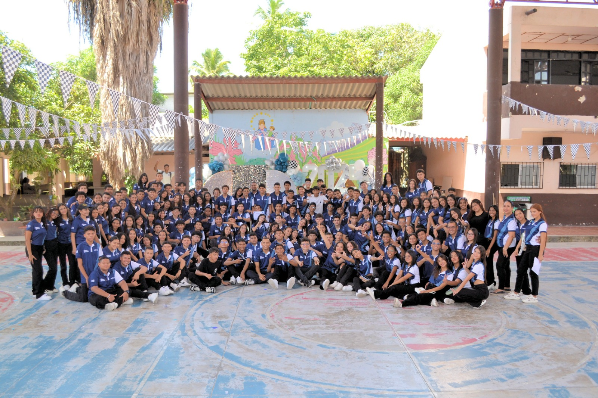
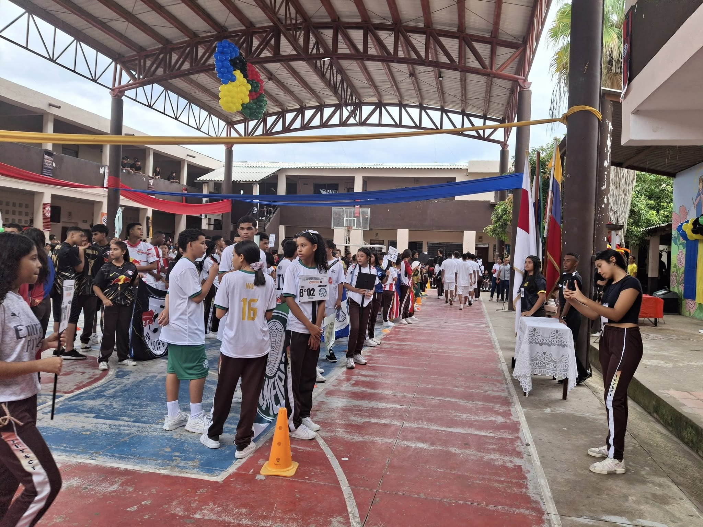
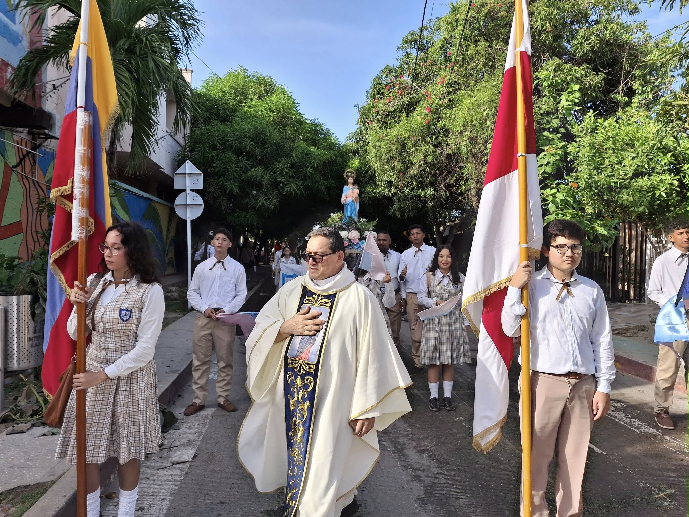

Noticias del Colegio
IETECI Celebró la Promoción de Bachilleres con un Evento de Espiritualidad y Afectos

La comunidad educativa de la IETECI se reunió en un emotivo evento para la promoción de bachilleres, un espacio que, más allá del éxito académico, se dedicó al fortalecimiento espiritual y emocional de los estudiantes. El acto se llevó a cabo luego de un arduo trabajo cognitivo, brindando un momento significativo de motivación y recreación.
Bajo el lema "Ietecistas para el mundo, con Fe", la celebración destacó la importancia de la confianza y el empeño en el camino de los estudiantes, quienes han culminado 11 años de formación en la institución. El evento fue una oportunidad para reconocer el crecimiento personal y los lazos de amistad forjados durante este tiempo.
La Institución Educativa Técnica Comercial e Industrial extendió su profundo agradecimiento a la Alcaldía Municipal de Palmar de Varela, la Secretaría de Gestión Social de Palmar de Varela y la Secretaría de Educación del Atlántico por el apoyo brindado. Su colaboración fue fundamental para el desarrollo de esta actividad, que no solo celebra un logro académico, sino que también refuerza los valores y la formación integral de los estudiantes.
Estreno de la Promoción 2025 "Last Lap"
El pasado 18 de julio, nuestra institución vivió un momento lleno de emoción y orgullo con el
lanzamiento oficial de la Promoción 2025, que este año lleva por nombre "Last Lap".
La ceremonia estuvo marcada por la alegría y el entusiasmo de los estudiantes de grado 11°, quienes compartieron
con la comunidad educativa el inicio de su recta final en el colegio. Durante la presentación se resaltaron valores
como la unión, la perseverancia y el compromiso, características que distinguen a esta promoción.
Con actividades culturales, mensajes de motivación y un ambiente festivo, la Promoción Last Lap
inició oficialmente su recorrido hacia la meta de graduarse, dejando en claro que este último tramo será
inolvidable y estará lleno de aprendizajes.
¡Felicitaciones a todos los integrantes de la Promoción 2025!
Miniolimpiadas Ietecistas Jornada Mañana 2025: una fiesta deportiva con valores
El pasado 13 de junio , la Institución Educativa Técnica Comercial e Industrial (IETECI) celebró con gran entusiasmo las Miniolimpiadas Ietecistas 2025 para la Jornada de la Mañana. Este evento deportivo no fue solo una competencia, sino una verdadera fiesta dedicada a los valores del deporte.
La jornada estuvo llena de energía, compañerismo y sana rivalidad. A través de diferentes disciplinas y juegos, los estudiantes demostraron su espíritu deportivo y el trabajo en equipo, pilares fundamentales de la formación que se promueve en la institución.
La comunidad IETECISTA se enorgullece de estos espacios que fortalecen el cuerpo y la mente, recordándonos que el deporte es una herramienta poderosa para el crecimiento personal y la convivencia.
Emotiva Ceremonia de Entrega de la Virgen a los Estudiantes de Grado Décimo
El pasado 30 de mayo, los estudiantes de undécimo grado realizaron una emotiva ceremonia para entregar la imagen de la Virgen a los jóvenes de décimo. La jornada estuvo cargada de un profundo sentimiento de Fe, Esperanza, Paz y Bien , en un acto que simboliza el traspaso de un legado de valores y principios que guiarán a los estudiantes en su último tramo escolar. Este evento significativo fortalece los lazos de la comunidad educativa y refuerza la espiritualidad en el camino de los futuros bachilleres.